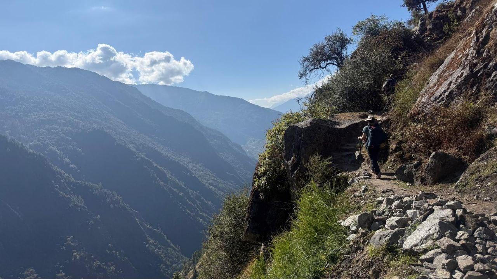
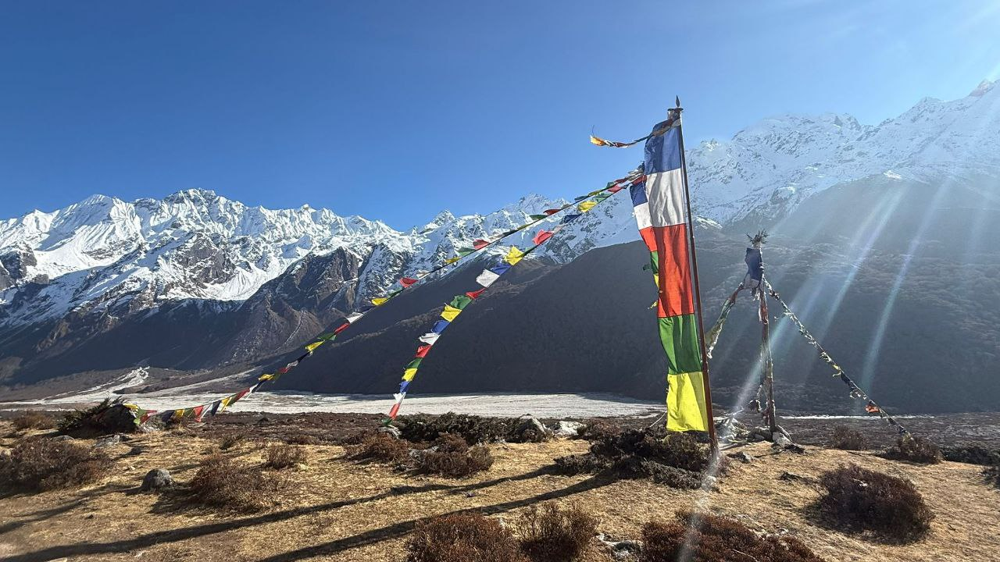
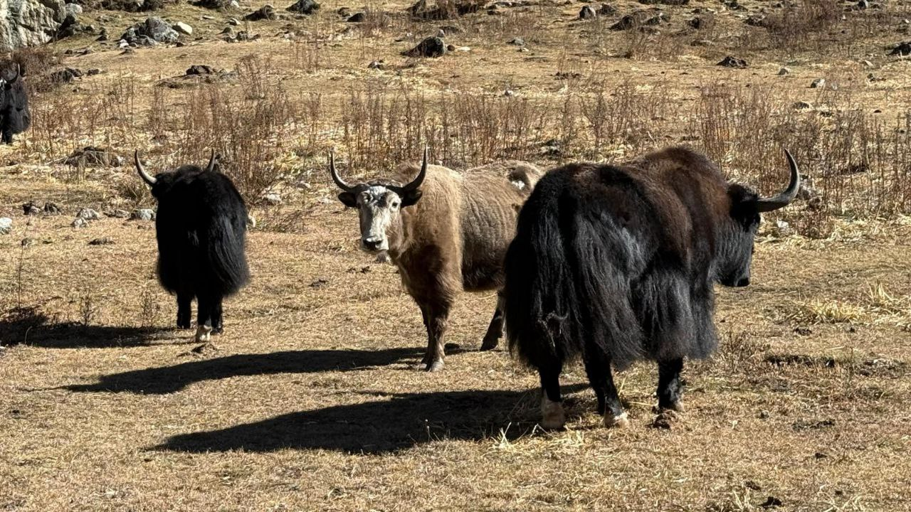
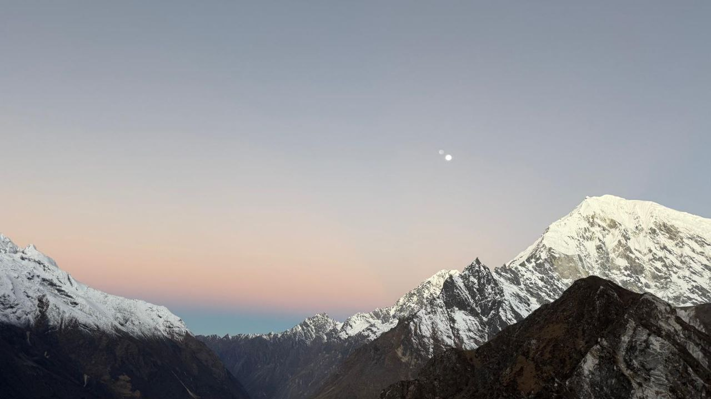
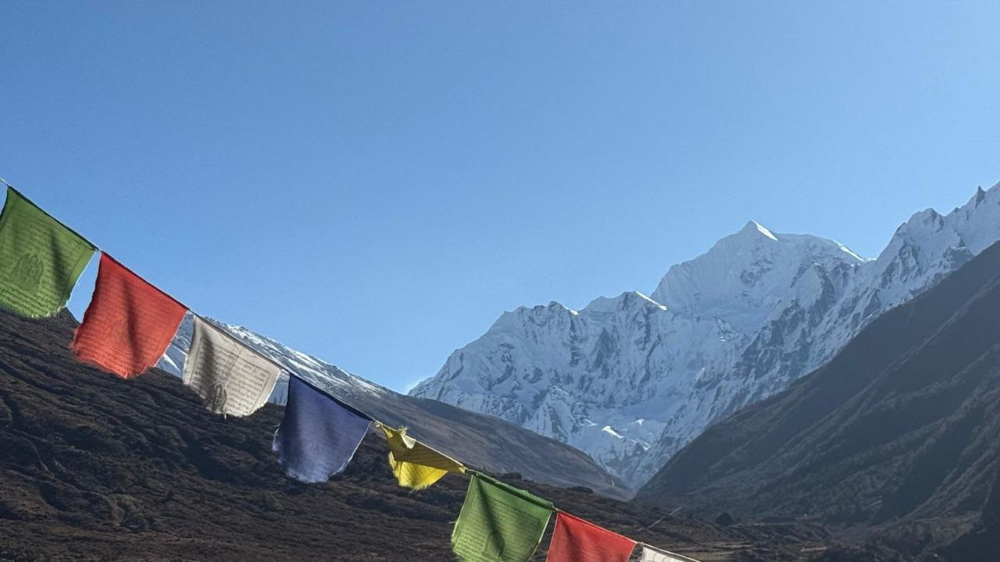
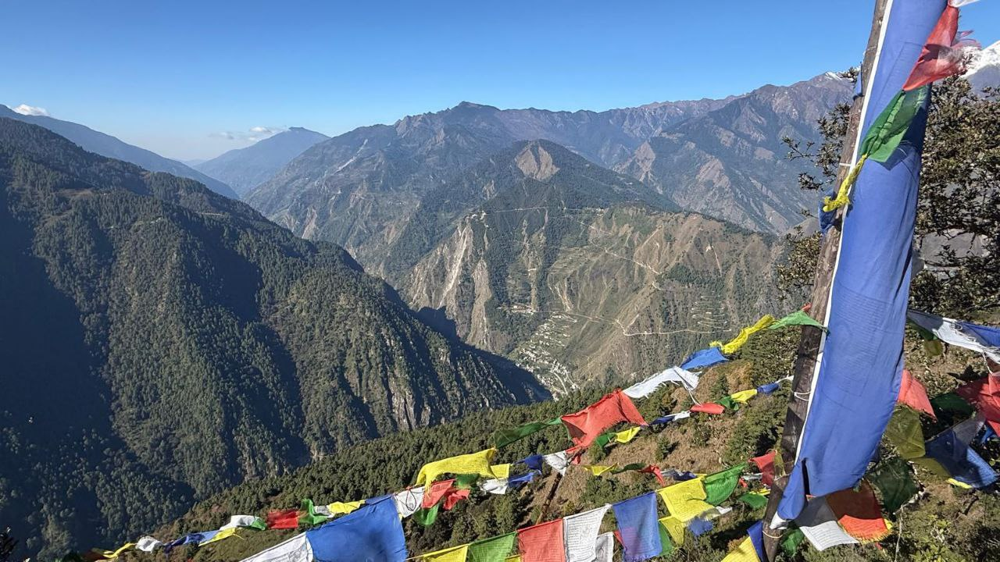
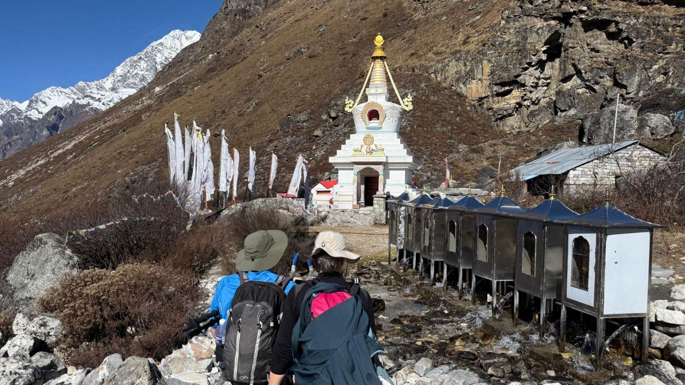

Nepal: El Sostre del Món
Trekking per la vall de Langtang.
La Vall de Langtang
Un viatge per la vall de Langtang, una de les rutes de trekking més espectaculars del Nepal. Passarem per pobles de muntanya, boscos de rododendres i vistes impressionants de les muntanyes de l'Himàlaia.
Que trobaràs en aquest viatge?
- Guia local i professional de la zona.
- Visita a la vall de Katmandú i els seus temples sagrats.
- Allotjament en cases locals i hotels de muntanya.
- L'espiritualitat dels monestirs budistes com Kyanjin Gompa.
Galeria d'imatges








Recorda: Aquesta és només una proposta base. La nostra especialitat és la personalització total. Adaptem l'itinerari, la dificultat i els serveis al gust i ritme del vostre grup per fer que el viatge sigui realment vostre.